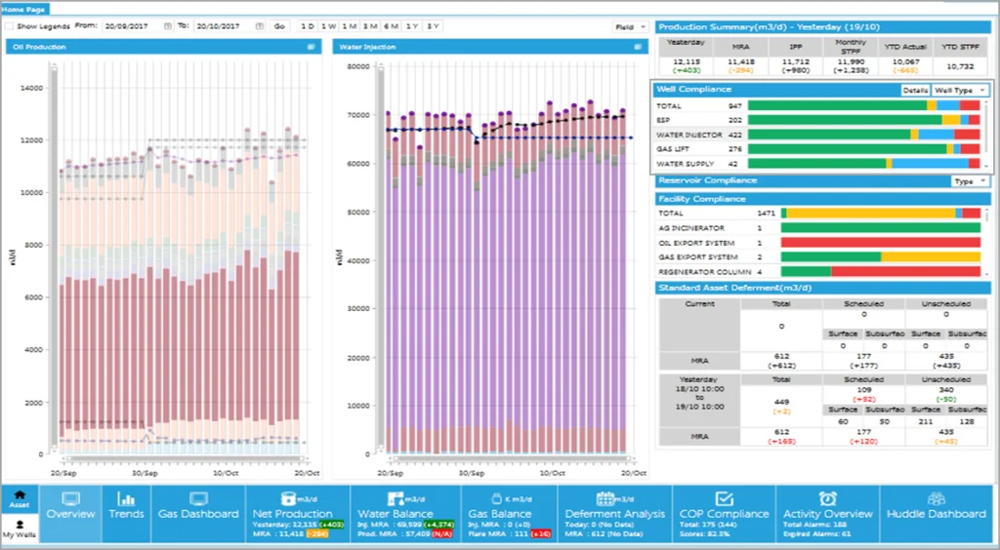

Integrated Asset Management
Asset Home Page
A single dashboard, standardized across every asset — so leadership sees performance instead of hunting for it.
The challenge
Petroleum engineering and operations team leads and asset managers were spending up to 2 hours a day digging into several databases to evaluate their assets' performance daily.
The solution
This project was intended to provide team leads and managers easy access to all the required information to establish their assets' performance — production, injection, deferments, and surface or sub‑surface operating envelope compliance, in one location.
The impact
- Asset Home Page displays total asset performance in a standard way, across all 15 oil, gas and EOR assets
- Automated corporate data access saves significant asset‑leadership time — 1.75 hours per day of team‑lead time saved across 15 assets, equivalent to 3.3 FTEs
- Production and deferment performance visible against targets at a glance
- Detailed, second‑level analysis — deferment analysis, water‑balance, limit diagrams and more — is now available daily instead of infrequently, all accessible with a single click
- Leadership time is now spent closing performance gaps and realizing opportunities, instead of looking for them
- Automation and standardization overcome discipline bias across assets
Tags


0
FTEs saved across 15 assets
0
Team‑lead time saved per day, per asset
0
Assets on one standardized display
Related solution
Explore the solution
Built on Integrated Asset Management.
See the Asset Performance Dashboard and the modules behind it.